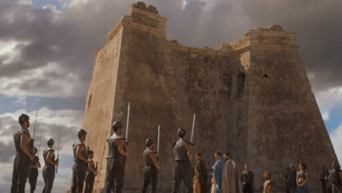
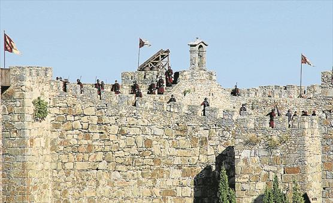
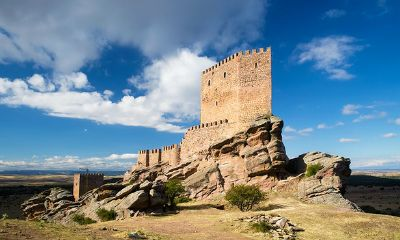
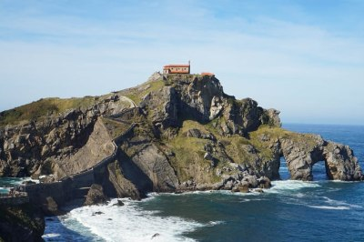

ALMERIA:Torre de Mesa Roldán

Está situada en el Parque Natural de Cabo de Gata, entre Agua Amarga y la playa de los
Muertos. La reconocerás porque, además de haber sido sobrevolada por los dragones, aquí es
donde Daenerys tiene la conversación con los amos de Meereen antes del comienzo de la
batalla.
La torre de Mesa Roldán fue levantada en 1766 para vigilar la costa de los piratas
beberiscos.
Volver a ciudades
CACERES:Castillo de Trujillo

El castillo de Trujillo ha protagonizado, el capítulo final de la séptima temporada de Juego
de Tronos. El episodio arranca en el castillo, donde ondea la bandera de los Lannister.
Jaime Lannister y Bronn, observan desde las almenas de la fortaleza a los ejércitos. Así,
Trujillo se convierte en una de los castillos defensivos de Desembarco del Rey.
Volver a ciudades
CORDOBA:Puente Romano
El Puente Romano de Córdoba ha aparecido de nuevo en la popular serie de Juego de Tronos. Un
vez más este emblema cordobés se ha transfigurado, por obra de los efectos especiales, en el
Puente Largo que une las dos áreas de la ciudad libre de Volantis a través del Rhoyne.
Volver a ciudades
GUADALAJARA:Castillo de Zafra

El Castillo de Zafra es una impresionante fortaleza situada en el municipio de Campillo de
Dueñas, en Guadalajara, Castilla-La Mancha. Data del siglo XII y destaca por estar
construida encima de una gran roca con una torre en el punto más alto.
Volver a ciudades
Vizcaya:San Juan de Gaztelugatxe

San Juan de Gaztelugatxe es de esos lugares únicos en el mundo. El nombre viene de la emita
que hay en lo alto de este islote. Para unir esta pequeña isla a tierra firme se construyó
un puente de piedra con 241 escaleras.
San Juan de Gaztelugatxe y GOT van de la mano. Este lugar ha sido uno de los escogidos para
recrear Rocadragón. La casa tradicional de los Targaryen que acaba de recuperar Daenerys.
Volver a ciudades